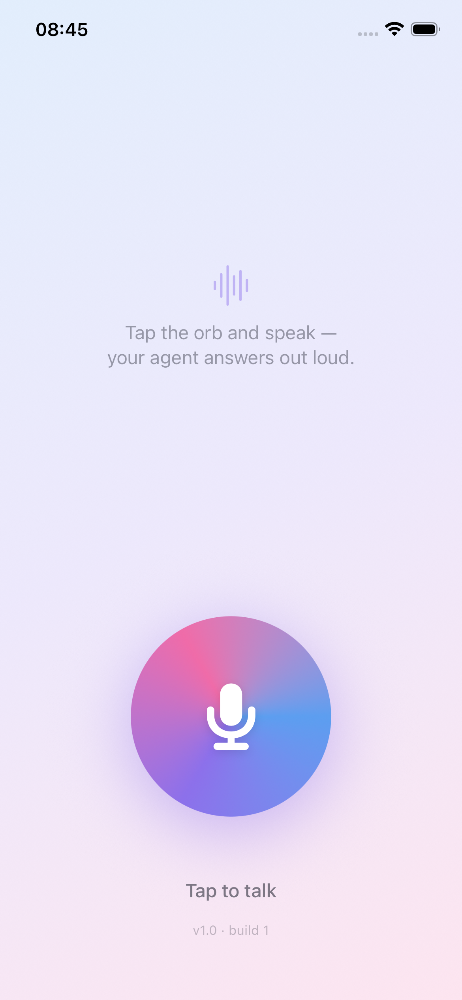
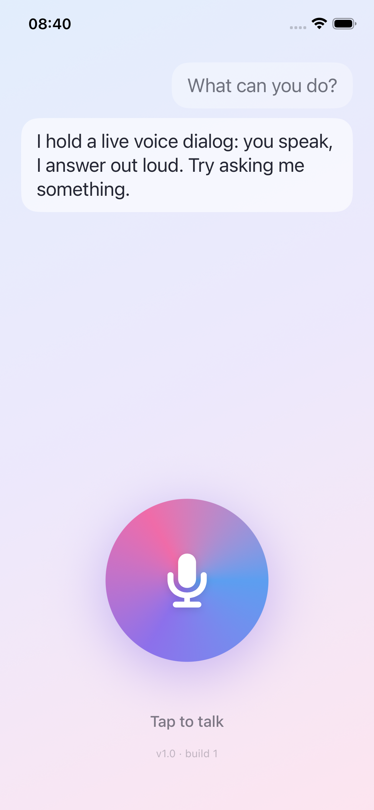
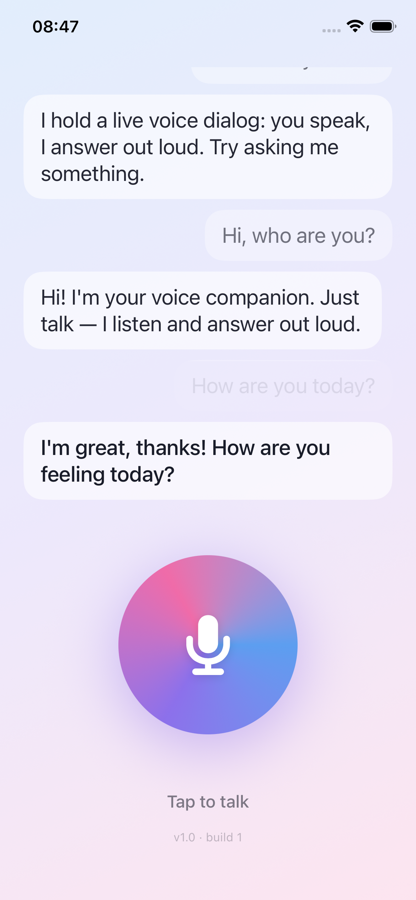

A calm, hands-free voice companion. Tap the orb, speak naturally, and hear a reply back — no typing, no menus. Lock your screen and the conversation keeps going.
See how it worksSpeak naturally and listen, eyes-free. Just your voice and a calm reply.
Your speech is recognized right on your iPhone with on-device speech recognition.
Start a dialog, lock your phone, and the conversation continues with Live Activity controls.
A single mic orb and your conversation. Nothing else to learn.
Short, conversational answers meant to be heard, not read.
Think out loud, ask quick questions, or just have someone to talk to.


